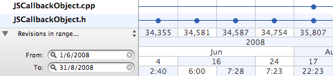

The history of individual files can quickly contain dozens, if not hundreds of revisions. Cornerstone includes a set of pre-defined history filters to keep the information displayed in the history browser manageable and help you find the history information you're looking for.
The filter menu located to the top of the filter area to the left of the timeline axis is used to select from a list of pre-defined filters. The fields displayed in the filter area differ depending on the filter selected. For example, From and To fields are displayed when the Revisions in range… filter is selected:

To filter the history:
The Revisions starting at…, Revisions up to and including… and Revisions in range… filters accept dates or revision numbers. Dates should be entered using the format configured in the Format tab of the International pane of your Mac's System Preferences.